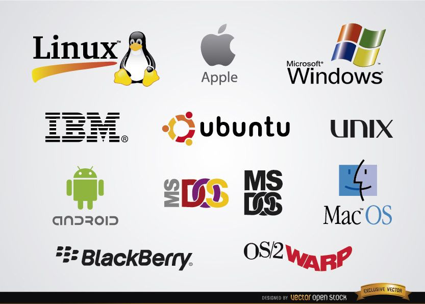
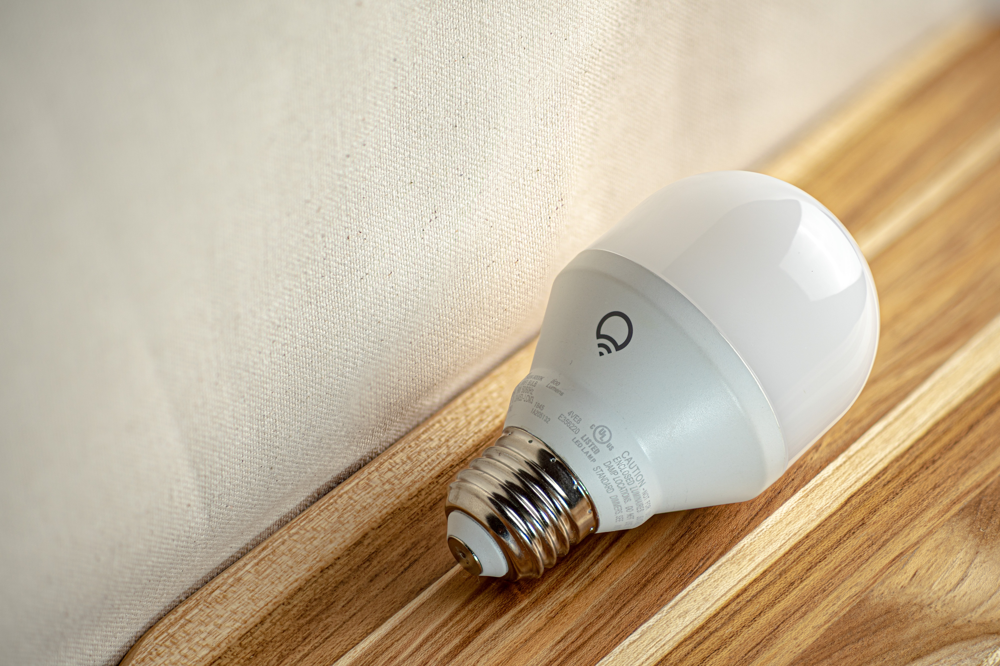

¿Vez algo interesante ?
No dudes en probarlo!

Maquinas virtuales
Instalación y configuración de sistemas operativos dentro de una maquina, esto es posible ya que los nuevos OS son “virtuales” y no “reales”. Es posible entonces, operar con aplicaciones Windows, Mac y Android en un mismo computador.Web Scrapping
Permite la lectura del código fuente de una pagina web, dentro de las funciones que permite es la automatización de formularios web, como por ejemplo, generación automática de boletas electrónicas.

Audio en bits
Permite habilitar el micrófono del dispositivo operacional de forma que el audio entrante sea estudiado como información, la aplicación personal es un regulador de luz respecto al volumen ambiente.

Control luces
Permite el control de las caracteristicas propias de la iluminación, como el brillo, el color, el ciclo de colores, el encendido y apagado, etc. Todo esto solo es posible si se tiene una bombilla inteligente.